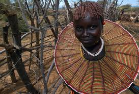

Pokot seem to be related to numerous peoples who live in the region with ties to the nilotic speakers and to Bantu people who come from central Africa.
For purposes of the Kenyan census Pokot are placed in the Kalenjin group, which consists of many diverse groups of people who share Nilo-Hamitic ancestry and history.
Some of them are cultivators ("corn people"), while others are pastoralists ("cow people").
Among both groups,however,their wealth is directly proportional to the number of cows one owns.
Cows are used for barter, exchange, and most significantly as bride wealth
Pokot society is governed through a series of age-grades.
Group membership is determined by the age at which one undergoes initiation,for both male and female.
After initiation, young people are allowed to marry and are permitted to begin participating in local economic activities.
When one reaches old age among Pokot, he or she is accorded a certain degree of status and respect.
Responsibilities of elders include;